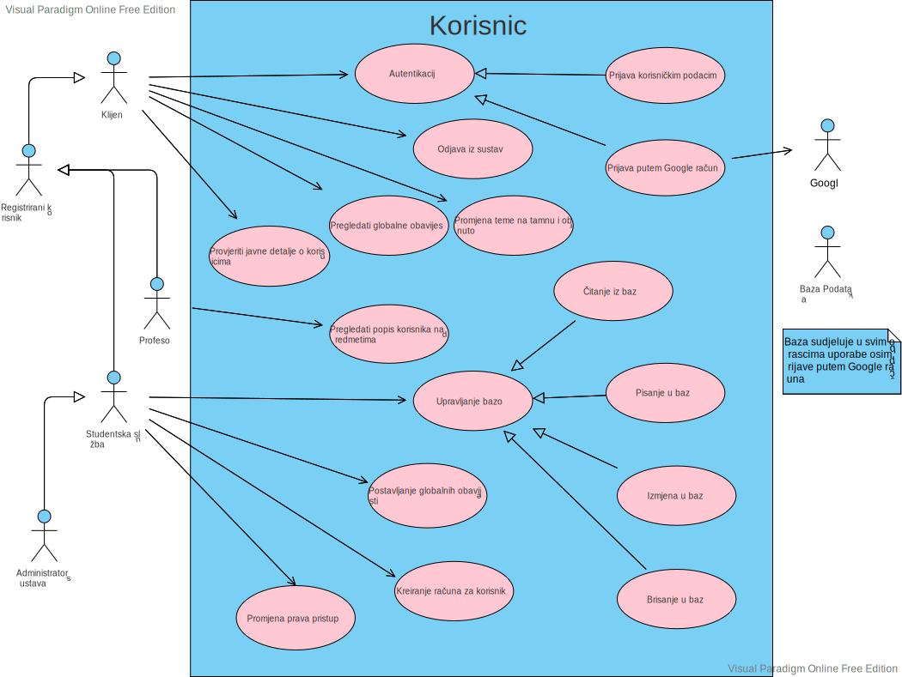
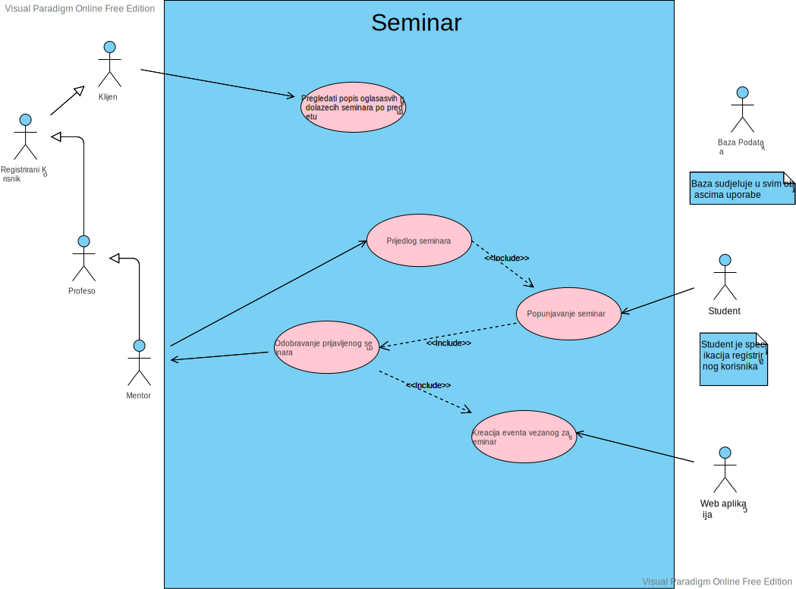

[slika 2.1] slika predlaganja teme za seminar
[slika 2.1] slika predlaganja teme za seminar | Revizija | Opis promjene/dodatak | Autori | Datum |
|---|---|---|---|
| 0.1 | Napravljen predložak | Matija Fućek | 1.10.2022. |
| 0.1.1 | Dodan opis projektnog zadatka | Matija Fućek | 22.10.2022. |
| 0.1.2 | Dodani funkcionalni zahtjevi | Marko Supičić | 24.10.2022. |
| 0.2 | Napravljen predložak za bazu podataka | Marko Supičić | 28.10.2022. |
| 0.2.1 | Početna arhitektura i dizajn sustava | Marko Supičić, Matija Fuček | 29.10.2022. |
| 0.3 | Izmjena predloška baze | Cijeli tim | 4.11.2022 |
| 0.3.1 | Izrada obrazaca uporabe | Marko Supičić | 5.11.2022. |
| 0.3.2 | Dodani ostali zahtjevi | Hary Samardžić | 5.11.2022. |
| 0.3.3 | Izrada baze podataka | Matija Fuček | 7.11.2022. |
| 0.4 | Izrada 1 sekvencijskog dijagrama | Marko Supičić | 11.11.2022. |
| 0.4.1 | Dodani opisi obrazaca uporabe | Marko Supičić | 11.11.2022. |
| 0.5 | Odbačen stari sekvencijski dijagram i dodana 2 nova | Adrian Aničić | 6.12.2022. |
| 0.5.1 | Dodana 2 nova sekvencijska dijagrama | Franko Budimir | 6.12.2022. |
| 0.5.2 | Izrada dijagrama razreda | Luka Čulav, Hary Samardžić | 6.12.2022. |
| 0.5.3 | Prepravljena arhitektura i dizajn sustava | Matija Fuček | 6.12.2022. |
| 0.5.4 | Izmjena dijagrama obrazaca uporabe | Adrian Aničić | 6.12.2022. |
| 0.5.5 | Prepravljena baza podataka | Hary Samardžić | 6.12.2022. |
| 0.5.6 | Prepravljen opis obrazaca uporabe | Marko Supičić | 7.12.2022. |
| 0.6 | Prepravljena 2 sekvencijska dijagrama | Adrian Aničić | 9.12.2022. |
| 0.6.1 | Prepravljena 2 sekvencijska dijagrama | Franko Budimir | 9.12.2022. |
| 0.7 | Prepravljen dijagram razreda | Luka Čulav, Hary Samardžić | 12.12.2022. |
| 0.7 | Opis dijagrama razreda | Luka Čulav, Hary Samardžić | 12.12.2022. |
| 0.7.1 | Odbačen 1 stari i dodan 1 novi dijagram razreda | Franko Budimir | 14.12.2022 |
| 0.7.2 | dodan opis 1 sekvencijskog dijagrama | Adrian Aničić | 14.12.2022. |
| 0.7.3 | dodan opis 3 sekvencijska dijagrama | Franko Budimir | 14.12.2022. |
| 0.7.4 | Dnevnik izmjena projekta | Marko Supičić | 14.12.2022. |
| 0.7.5 | opis projektnog zadatka | Marko Supičić | 14.12.2022. |
| 0.7.6 | Zaključak i ostale sitnice | Marko Supičić | 14.12.2022. |
| 0.7.7 | Korištene tehnologije i alati | Matija Fuček | 14.12.2022. |
| 0.7.8 | Upute za puštanje u pogon | Matija Fuček | 14.12.2022. |
| 0.7.9 | Prikaz aktivnosti grupe | Cijeli tim | 15.12.2022. |
| 0.7.10 | Korigiranje teksta i provjera dokumentacije | Cijeli tim | 15.12.2022. |
| 0.8 | Izmjena raspisa baze, dijagrama baze i klasnog dijagrama podataka | Hary Samardžić | 13.1.2023. |
| 0.8.1 | Dodavanje dijagrama stanja, aktivnosti, razmještanja | Cijeli tim | 13.1.2023. |
| 0.8.2 | Dodavanje dijagrama komponenti | Matija Fućek | 14.1.2023. |
| 0.8.3 | Dodavanje opisa i primjera ispitivanja programskog rješenja; Stilistička optimizacija | Matija Fućek | 16.1.2023. |
| 0.8.4 | Upute za puštanje u pogon | Matija Fućek, Adrijan Aničić, Luka Čulav | 18.1.2023. |
Okupljena je ekipa od sedmero visoko motivirana člana, od kojih svaki doprinosi svojim usmjerenjem tako da pokrivamo cjeloukupan stack potreban za razvoj platforme.
Projekt “Studius” je osmišljen kao platforma koja objedinjuje set alata potrebnih za rad proizvoljne obrazovne ustanove, prvenstveno fakulteta, na velikom broju studenata, kolegija i posebnih programa. Cilj projekta je kontribuirati boljem iskustvu svakog studenta i profesora diljem Sveučilišta. Posebno smo motivirani da omogućimo fakultetima pored FER-a kvalitetnije rješenje za upravljanje kolegijima i pružimo bolje načine komunikacije profesora i studenata. S obzirom da je to iznimno težak u dugotrajan proces u sklopu kolegija "programsko inženjerstvo" implementirat ćemo samo dio tog većeg projekta. Što ćemo i kako ćemo to implementirati opisano je u nastavku.
Naš sustav ima više uloga, početna uloga od koje sve kreće je klijent Prilikom pokretanja sustava klijentu prikazuju se log in forma s kojom se može prijaviti u sustav. Može se prijaviti putem korisničkih podataka uz korisničko ime i lozinku ili pomoću Google accounta. Ako se klijent želi prijaviti putem Google accounta on mora već biti registriran putem korisničkih podataka. Ova mjera služi kako se nebi svatko mogao registrirati u Studius i kako bi se korisnicima Studiusa ubrzala prijava. Pored log in forme ponuđena je tražilica za kolegije gdje se može pronaći određene kolegije. Na temelju korisnikovog upita sustav generira kolegije. Kad korisnik pronađe kolegij za koji je zainteresiran može kliknuti na njega i prikazat će mu se javni detalji o tom kolegiju. Na sličan način mogu se pretraživati i studenti, doktorandi i djelatnici fakulteta. Takodžer postoje mogućnosti odabira za globalne obavijesti, dakle obavijesti relevantne za cijeli fakultet. Uz to, moguć je i pregled nadolazećih seminara. Seminare su radovi o nekoj istraživačkoj temi i njih održavaju doktorandi. S obzirom da su ti radovi javni, svaki klijent može prisustvovati na njima ako želi. Na dalje, osim klijenta postoje uloge
Svaka od tih uloga ima iste mogućnosti kao i klijent uz još neke nadodane.
Na primjer, student može upisati dostupni kolegij uz dopuštenje studentske službe ili nositelja predmeta. Jednom kad upiše predmet može pregledati detaljnije obavijesti vezane uz kolegije na koje je upisan koje običan klijent ne može vidjeti. Takodžer mu se nudi i pregled detalja o kolegiju kojima bez prijave u sustav nebi imao pristup. Nakon studenta slijedi doktorand koji ima još neke mogućnosti koje student nema.
Doktorand kako bi uspješno položio neke predmete treba odrađivati seminare. Neke mora napraviti i održati sam, a na nekima mora samo prisustvovati. Teme za one koje planira održati može samoinicijativno smisliti i prijaviti pa ju kasnije mentor odobri ili odbije ovisno o tome je li relevantna za njegov predmet. Alternativno, može uzeti neku od tema koja je već predložena na tom predmetu od strane nositelja jer je relevantna za taj predmet.
S druge strane imamo fakultetsko osoblje koje čine: profesor, nositelj, studentska služba, administrator sustava. Profesor. može pregledati popis studenata i/ili doktoranada na predmetima kojima predaje, takodžer i njihove statistike ispita. Doktoranadima koje mentorira je zadužen za bilježenje evidencije dolaska, jer je svakom doktorandu propisan broj obaveznih dolaska na seminare drugih doktoranada. Osim toga zadužen je i za odobravanje tema seminara tim doktorandima ovisno o tome je li tema relevantna za njegov predmet
Nositelj na svojim predmetima postavlja je li kolegij dostupan za upisivanje. Na tim predmetima može i uređivati opis kolegija, posebno ako dođe do promjena kolegija. S obzirom da je glavni na predmetu zadužen je i za predlaganje tema seminara doktorandima na tom predmetu
Studentska služba ima pravo upravljati bazom, tu spada čitanje iz baze, pisanje u bazu, brisanje podataka u bazi i ažuriranje baze svih tablica osim mijenjanja uloge Uz to studentska služba je zadužena za kreiranje računa studentima, doktorandima, i zaposlenicima fakulteta. U aplikaciji nemamo registraciju jer se ona obavlja preko studentske službe, a podaci za prijavu moraju biti doneseni uživo. Prilikom izrade računa dužna je obavijestiti novoizrađenog korisnika mailom. Osim toga ima pravo i na kreiranje kolegija. Kad profesorsko vijeće osmisli novi predmet Studentska služba je ta koja će staviti podatke na stranicu fakulteta sa svim traženim podacima.
Administrator sustava Studentska služba ima skoro sve, ali zbog potreba sigurnosti treba rola jača od nje a to je administrator sustava. Samo jedan korisnik može imati ulogu administratora. Ta uloga ima sve mogućnosti kao i studentska služba uz dodatnu mogućnost promjene role korisnicima.
Poseban alat koji bi pretežno djelovao automatski, ali i uz mogućnost ručnih izmjena je alat za upravljanje korisnicima na razini samog sustava.
Neregistrirani korisnici bi imali uvid u javne informacije za svaki kolegij kao sto su opis predmeta, način bodovanja, popis profesora, asistenata i ostalih službenih sudionika.
Registrirani korisnici, kojima su dodijeljena prava dubljeg pregleda u kolegij, bi mogli prolaziti kroz sam sadržaj kolegija u obliku lekcija, materijala, te kvizova i zadataka za vježbu.
Posebno za svaki kolegij određuju se registrirani korisnici koji bi dobili ulogu Editora. Svaki editor bi mogao mijenjati javno dostupne stranice, te sam sadržaj lekcija unutar kolegija. Pored sadržaja, editori (ili potencijalno još neka visa rola) bi mogli mijenjati i samu listu registriranih korisnika kojima je dano pravo dubljeg pregleda.
Od profila korisnika do sadržaja lekcija unutar kolegija, sustav za sadržaj pobrinuo bi se da se diljem stranice sadržaj organizira na što pregledniji način, te bi olakšavao i pregled i uređivanje, naravno sa širokim mogućnostima proširenja kroz ekstenzije.
Nositelju predmeta prikazuju se predmeti na kojima je nositelj te popis studenata koje mentorira, te forma za upis naslova seminara. Odabire predmet, studenta te upisuje naslov pa klikom na gumb kreira ideju za seminar. Ona se prikazuje odabranom studentu uz opciju unosa opisa seminara. Nakon unosa opisa, student pritiskom na gumb šalje predložak mentoru na odobrenje. Mentor na popisu predložaka ima opciju konfirmacije seminara.
[slika 2.1] slika predlaganja teme za seminar
[slika 2.2] slika predavanja nacrta seminara
[slika 2.3] slika izlistanih seminara
Neregistriranom korisniku prikazuje se naslovna stranica s osnovnim informacijama vezanim za sustav radnog imena "Studius". Isti se može prijaviti u sustav sa svojim korisničkim podacima.
Registracijom u sustav korisnik dobiva razinu prava određenu ulogom u sustavu. Postojat će uloge administratora, fakultetskog osoblja (nositelja kolegija, profesora te asistenata), upisanih studenata, posjetitelja I razvojnog tima.
Svaka od ovih uloga daje pristup određenim funkcionalnostima I informacijama na sustavu.
Student prijavom u sustav dobiva prikaz glavne stranice. Na njoj su mu vidljivi njegovi predmeti za koje za svaki piše skupljeni broj bodova. Piše i lista položenih predmeta te prosjek ocjena koji je student ostvario u obrazovnoj ustanovi. Nadalje ima kratki prikaz nadolazećih obaveza, a klikom na tu sekciju, otvara se stranica sa svim obavezama, koje također imaju svaka svoju stranicu. Također ima vidljiv jedan manji kalendar, koje mu je inicijalno stanje da prikazuje dnevni kalendar, ali postoji mogućnost podešavanja na veće vremensko razdoblje. Klikom na kalendar otvara se zasebna stranica s kalendarom, s inicijalnim stanjem pregleda trenutnog tjedna. Također moguće su opcije podešavanja na veće i manje razdoblje. U kalendaru su vidljive sve nadolazeće obaveze, koje nude i daljnje informacije. Student također ima mogućnost dodavanja vlastitih zapisa u kalendar. Nadalje, na glavnoj stranici ispod manje verzije kalendara, vidljiv je popis upisanih predmeta. Klikom na neki od njih, otvara se stranica predmeta. Student ovdje može vidjeti osnovne informacije o predmetu te ima pristup materijalima i svojim rezultatima na predmetu. Dostupni materijali su mu prenesene prezentacije, videi i sl. Također na našoj platformi omogućili bismo pristup interaktivnim lekcijama. Njih kreirea profesor i to omogućuje studentima bolje usavršavanje gradiva, a profesorima opciju da temeljem rezultata daje određeni broj bodova. Slično, ali ne isto, napravili bismo odjeljak s funkcionalnostima sličnim aplikaciji Kahoot koja bi se mogla koristiti na predavanjima uživo, sa svrhom sličnom interaktivnim lekcijama. Studentu su vidljive obaveze vezane za otvoreni predmet. Na glavnoj stranici, ispod popisa predmeta, nalaze se najnovije novosti i obavijesti o fakultetu. Također će student imati pristup detaljnijim obavijestima koje može filtirati ili se na njih pretplaćivati.
Fakultetsko osoblje dijeli se na nositelje predmeta, asistente te demonstratore koji imaju ovisno o tome manja ili veća prava. Prijavom u sustav, osoblje također dobiva prikaz glavne stranice, drugačije od one kakvu vidi student. Vidljiv im je dnevni kalendar, kojem, kao i studenti, mogu podesiti vremenski interval na veći. U njemu su vidljive nadolazeće obavee. Klikom na kalendar otvara se zasebna stranica s većim, ali također podesivim, prikazom. Ovdje osoblje ima mogućnost unosa svojih zapisa, ali također i zapisa kojima mogu podesiti vidljivost. Recimo, žele održati konzultacije u određeno vrijeme za određenu grupu studentata. Na glavnoj stranici, ispod kalendara, nalazi se popis predmeta na kojima sudjeluju. Na njima imaju različite uloge. Za svaki predmet, postoji zasebna stranica. Na njoj imaju pristup listi studenata upisanih na odabrani predmet.
Daje im se mogućnost unosa bodova. Na ovoj stranici nalazit će se QR kod, koji će studenti moći skenirati te se na taj način može evidentirati dolaznost na predavanja. Naravno, imat će mogućnost i oduzimanja bodova za prisutnost u slučaju da primjete da je student napustio predavanje.
Za svaki predmet, postojat će repozitorij materijala, koji se mogu dodavati, brisati te uređivati. Daljim razvojem servisa, omogućili bismo neke funkcionalnosti inspirirane alatom Notion. Nudili bismo prijepis materijala na način da ga profesor može uređivati, a studenti mogu na svaki odlomak ostavljati komentare, te na taj način dobivati povratne informacije od profesora ili od drugih studenata. Time bismo omogućili bolju i lakšu komunikaciju, a time i usvajanje gradiva. Osim materijala, postojao bi pristup kreaciji, brisanju i uređivanju interaktivnih lekcija te ranije navedenim funkcionalnostima sličnim Kahootu. Osoblje ima pristup popisu održavanih provjera na predmetu, te unos bodova za svaku od njih. Nadalje, mogu slati obavijesti vezane za predmet. Ispod popisa predmeta na glavnoj stranici, osoblju se prikazuju obavijesti, slično kao i studentima.
Ulogu posjetitelja dobivaju studenti upisani na fakultet, ali oni koji nisu upisani na određeni predmet. Njima se na stranici tog predmeta prikazuju osnovne informacije o predmetu.
Administrator ima najviša prava, te ih dodjeljuje drugim ulogama.
 [slika 3.1] slika obrazaca uporabe kolegija
[slika 3.1] slika obrazaca uporabe kolegija
 [slika 3.2] slika obrazaca uporabe korisnika
 [slika 3.3] slika obrazaca uporabe obavijesti
[slika 3.3] slika obrazaca uporabe obavijesti
 [slika 3.4] slika obrazaca uporabe seminara
UC1 Prijava korisničkim podacima
UC2 Prijava putem Google računa
UC3 Pregledati javne detalje o kolegiju
UC4 Pregledati globalne obavijesti
UC5 Pregledati popis oglasa svih nadolazecih seminara po predmetu
UC6 Provjeriti javne detalje o korisnicima
UC7 Upisati korisnika na kolegij s određenom ulogom
UC8 Detalji o kolegiju
UC9 Prijedlog seminara
UC10 Popunjavanje seminara
UC11 Pregledati popis korisnika na predmetima
UC12 Odobravanje prijavljenog seminara
UC13 Uređivati opis kolegija
UC14 Kreacija eventa vezanog za seminar
UC15 Čitanje iz baze
UC16 Pisanje u bazu
UC17 Izmjena u bazi
UC18 Brisanje u bazi
UC19 kreiranje računa za korisnika
UC20 Kreirati kolegij
UC21 Postavljanje globalnih obavijesti
UC22 Promjena prava pristupa
UC23 Promjena teme na tamnu i obrnuto
UC24 Odjava iz sustava
[slika 3.5] slika sekvencijskog dijagrama prijave korisničkim podacima
Korisnik na početnoj stranici odabire opciju “Prijava”. Web aplikacija mu otvara stranicu prijave, koja ima dvije opcije, prijavu korisničkim podacima te prijavu Google računom. Odabirom opcije “Prijava korisničkim podacima”, otvara mu se forma u koju unosi svoje korisničke podatke. Predajom forme, aplikacija u bazi provjerava ispravnost podataka. U slučaju netočnih podataka, korisnik dobiva error. U slučaju ispravnih podataka, korisnik dobiva token I redirektiran je na početnu stranicu. Odabirom opcije “Prijava putem Google računa”, korisniku Google prikazuje dostupne gmail adrese. Korisnik odabire jednu, odvija se provjera s Google-om te korisnik dobiva token I redirektiran je na početnu stranicu.
 [slika 3.5] slika sekvencijkog dijagrama kreiranja računa
[slika 3.5] slika sekvencijkog dijagrama kreiranja računa
Studentski službenik otvara formu za registraciju studenta u koju upisuje sve potrebne podatke. Forma traži ponovni upis ukoliko je jedan ili više podataka neispravno te ispisuje razlog neispravnosti pojedinog podatka. Prilikom pravilno ispunjene forme, web aplikacija šalje podatke u bazu podataka te ih veže uz novoizrađenog studenta. Uspjeh o izradi studenta se šalje natrag studentskom službeniku, a mail s podatcima za prijavu se šalje korisniku kojemu pripadaju.
Unaprijed prijavljeni student, pritiskom na, za to predodređen, gumb, zahtjeva web aplikaciju da mu dohvati Google-ovu formu kojom se prijavljuje u svoj postojeći Google račun. Nakon što se uspješno prijavi u svoj Google račun, uspjeh u prijavi se dojavljuje web aplikaciji i studentu. Web aplikacija potom sprema podatke o Google poveznici i dojavljuje studentu uspjeh u povezivanju Google računa nakon čega se web aplikacija vraća na prijašnju stranicu.
[slika 3.6] slika sekvencijskog dijagrama izrade seminara
[slika 3.7] slika sekvencijskog dijagrama predlaganja seminara
Doktorand, pritiskom na, za to predodređen, gumb, zahtjeva web aplikaciju da mu dohvati formu za prijavu seminara. Dok ideja nije prihvaćena sa strane doktorandovog mentora, doktorand, preko web aplikacije, šalje mentoru nacrt seminara na koju mentor može odgovoriti odobrenjem. Nakon što mentor prihvati nacrt seminara, preko web aplikacije najavljuje predaju istog seminara nakon čega web aplikacija pohranjuje nacrt i datum predaje u bazu podataka. Predaja seminara mora biti najavljena najmanje 7 dana prije same predaje. Prilikom najave predaje seminara, web aplikacija izrađuje oglas seminara na stranici predmeta povezanog s mentorom koji se potom arhivira u bazu podataka. Oglas je vidljiv sve do same predaje seminara. Nositelj predmeta, koji ne mora nužno biti povezan sa seminarom, odluči predložiti seminar na stranici svojeg predmeta te web aplikaciji šalje zahtjev kojom ona hvata oglas. Predlaganje seminara također se pohranjuje u bazu podataka. Prilikom predavanja seminara, mentor predavača boduje seminar preko web aplikacije. Podatci o predaji i bodovanju seminara se pohranjuju u bazu podataka i oglas za isti seminar se briše.
Repozitorij Studiusa organiziran je kao monorepo što znači da su nam Frontend i Backend smješteni u poddirektorjima.
Arhitektura se može podijeliti na tri glavne cjeline:
Klijentski poslužitelj je program koji korisniku poslužuje Klijentsku aplikaciju koja obavlja velik dio logike na samom računalu korisnika.
Klijentska aplikacija je načinjena od statički generirane HTML ljuske te uz poslani Javascript paket koji hidrira ljusku dobivena stranica poprima cijelu funkcionalnost. Dobivena stranica na klijentu pruža sučelje za komunikaciju s ostatkom sustava.
Frontend servis, zahvaljujući na korištenju NextJS-a kao radnog okvira, je optimizirana za što veće performanse i minimalno kašnjenje kroz uporabu caching metoda (Incremental Static Regeneration), Reactovim server-renderiranim komponentama, i mnoštvu drugih naprednih metoda.
Sam Next.JS je nadogradnja okruženja React koje omogućuje pisanje komponenti korištenjem specifičnog jezika koji se zove JSX. JSX omogućava pisanje kôda kao što je HTML, no može se kombinirati s JavaScriptom. React će pretvoriti kôd u virtualni DOM te na kraju isporučiti HTML za korisnika.
Sama klijentka aplikacija je dizajnirana po vizualnim načelima dobrog UX i UI dizajna kako bi korisnik imao što manje trenja u realizaciji svojih ideja. Stiliranje u frontendu olakšano je korištenjem Tailwind biblioteke za dinamičku uporabu CSS jezika.
Cijeli kod je pisan sa velikom pažnjom na integritet tipova podataka, pa je tako putem biblioteke TRPC (više o tome kasnije) realizirana sama komunikacija između frontenda i backenda.
Backend je pisan u tehnologiji Node.JS, te su korištene i slijedeće biblioteke:
Struktura backenda je osmišljena na slijedeći način:
src direktorjia se nalazi cijeli kodcontrollers direktorij se nalazi globalna logika, nepovezana uz neki pojedini entitet u sustavudomain direktorija se nalazi svaki Entitet u sustavu
interactors, model, repository, tests, userRoutersrc/
├── config/
├── controllers/
│ ├── middleware/
│ ├── auth.ts
│ ├── router.ts
│ └── trpc.ts
├── services/
│ ├── authentication/
│ │ └── authRouter/
│ │ │ ├── index.ts
│ │ │ ├── loginRoutine.ts
│ │ │ ├── logoutRoutine.ts
│ │ │ └── meRoutine.ts
├── domain/
│ ├── User/
│ │ ├── interactors/
│ │ │ └── createUserInteractor.ts
│ │ ├── model/
│ │ │ └── UserEntity.ts
│ │ ├── repository/
│ │ │ └── UserRepository.ts
│ │ │ └── UserRepositoryPrisma.ts
│ │ ├── tests/
│ │ │ └── index.ts
│ │ └── userRouter/
│ │ │ └── index.ts
│ └── <EntityName>/
│ └── ...
├── utils/
└── index.ts
Za potrbe našeg projekta smo koristili biblioteku zvanu Prisma, te Postgres bazu podataka.
Za rad sa prismom potreban je prisma.schema datoteka unutar koje su popisani svi entiteti u bazi, te njihovi atributi zajedno s tipom podatka te defaultnom vrijednosti.
Prisma pri pokretanju određenog skupa naredbi generira SQL kod putem kojeg komunicira s bazom koja je poslužena na proizvoljnom URL-u.
Naša shema opisana je u slijedećem dijagramu baze.
 [slika 4.1] slika baze podataka
[slika 4.1] slika baze podataka
User entitet sadrži važne informacije o korisnicima sustava. Vezom One-to-many vezano je za entitet Content, te je refleksivno vezan One-to-Many vezan za User entitet (Mentor – Mentee veza).
| Naziv polja | Tip podatka | Opis polja |
|---|---|---|
| id | VARCHAR | Jedinstveni identifikacijski string korisnika, uuid() |
| Password | VARCHAR | Lozinka korisnika |
| Firstname | VARCHAR | Ime korisnika |
| Lastname | VARCHAR | Prezime korisnika |
| Jmbag | VARCHAR | Za sve korisnike osim studenata ima vrijednost NULL |
| ContentId | VARCHAR | Content.id |
| VARCHAR | e-mail korisnika | |
| userRole | Role | Korisnikova uloga na sustavu |
| mentorId | VARCHAR | ID mentora koji može biti dodijeljen studentu(user.id) |
| avatar | VARCHAR | URI profilne slike koju korisnik koristi |
Subject entitet sadržava bitne informacije o kolegijima na fakultetu. Vezom One-to-many vezan je za entitet Content
| Naziv polja | Tip podatka | Opis polja |
|---|---|---|
| Id | VARCHAR | Jedinstveni identifikacijski string kolegija, uuid() |
| title | VARCHAR | Naziv kolegija |
| description | VARCHAR | Kratki opis kolegija |
| ectsBod | VARCHAR | ects opterecenje kolegija |
| Semester | Semester | Kojem semestru pripada kolegij (SUMMER,WINTER) |
| Status | VARCHAR | Status kolegija, da li ga je moguće upisati ili se više ne predaje |
| contentId | VARCHAR | Content.id |
Enrollment entitet predstavlja instancu upisa na određeni kolegij. Povezan je sa Many-to-one vezama za User I Subject entitete.
| Naziv polja | Tip podatka | Opis polja |
|---|---|---|
| Id | VARCHAR | Jedinstveni identifikacijski string enrollmenta, uuid() |
| userId | VARCHAR | User.ID |
| subjectId | VARCHAR | Subject.Id |
| roleTitle | SubjectRole | Uloga koju upisani korisnik ima na kolegiju |
| Enrollment_date | DATETIME | Datum ostvarenja upisa |
| Status | VARCHAR | Označava status pojedinog upisa (aktivan, arhiviran) |
Seminar entitet sadrži važne informacije o seminarima koji doktorandi predaju na sustav. Povezan je One-to-one vezom sa entitetom Content, Many-to-one vezom sa entitetom Subject, te Many-to-One sa Userom
| Naziv polja | Tip podatka | Opis polja |
|---|---|---|
| Id | VARCHAR | Jedinstveni identifikacijski string seminara, uuid() |
| Title | VARCHAR | Naslov seminara |
| Description | VARCHAR | Kratki opis seminara |
| mentorId | VARCHAR | Jedinstveni identifikacijski broj mentora (user.mentorId) |
| Status | SeminarStatus | Status seminara |
| contentId | VARCHAR | Content seminara (content.id) |
| subjectId | VARCHAR | Subject.id |
| userId | VARCHAR | User.id |
Event entitet sadrzi vazne informacije o događajima na fakultetu (seminari, predavanje, talkovi,…).
| Naziv polja | Tip podatka | Opis polja |
|---|---|---|
| Id | VARCHAR | Jedinstveni identifikacijski string eventa, uuid() |
| Title | VARCHAR | Ime eventa |
| Description | VARCHAR | Kratki opis eventa |
| LinkedEntity | LinkedEntity | Entitet za koji je Event vezan |
| LinkedEntityId | VARCHAR | Id entiteta za koji je Event vezan |
| Status | Status | Status eventa |
Room entitet sadrži važne informacije o dvoranama I prostorijama na fakultetu. One-to-Many vezom je spojen sa entitetom RoomTimeEvent.
| Naziv polja | Tip podatka | Opis polja |
|---|---|---|
| Id | VARCHAR | Jedinstveni identifikacijski broj prostorije, uuid() |
| Title | VARCHAR | Naziv prostorije |
| Capacity | INT | Kapacitet prostorije |
RoomTimeEvent entitet sadrži važne informacije o održavanju događaja na fakultetu. Spaja događaj sa prostorom I vremenom održavanja. Many-to-one vezama je spojen sa entitetima Room I Event.
| Naziv polja | Tip podatka | Opis polja |
|---|---|---|
| Id | VARCHAR | Jedinstveni identifikacijski string održavanja događaja, uuid() |
| dateStart | DATETIME | Vrijeme početka događaja |
| dateEnd | DATETIME | Vrijeme završetka događaja |
| Status | Status | Status RoomTimeEventa |
| Event_ID | INT | Event.event_ID |
| Room_ID | INT | Room.room_ID |
PinnedEvent entitet koji sadržava bitne informacije o seminaru koji nositelji odabiru kao prijedlog za studente svojeg predmeta. Vezom One-to-one vezan je za entitete Seminar I Subject
| Naziv polja | Tip podatka | Opis polja |
|---|---|---|
| Id | VARCHAR | Jedinstveni identifikacijski broj oglasa eventa, uuid() |
| subjectId | VARCHAR | Seminar.id |
| eventId | VARCHAR | Event.id |
EventUserPresence entitet sadrži bitne informacije o prisutnosti studenata na događajima gdje se njihova prisutnost očekuje. Many-to-one vezom je spojena sa User entitetom te Many-to-One vezom je spojena na RoomTimeEvent entitet.
| Naziv polja | Tip podatka | Opis polja |
|---|---|---|
| Id | VARCHAR | Identifikacijski broj evidencije, uuid() |
| presenceStatus | BOOL | True/False, je li student bio prisutan |
| RoomTimeEventId | VARCHAR | RoomTimeEvent.id |
| userId | VARCHAR | User.id |
| Naziv polja | Tip podatka | Opis polja |
|---|---|---|
| Id | VARCHAR | Identifikacijski string sadržaja, uuid() |
| Markdown_text | VARCHAR | Sadržaj obavijesti ili informacije o predmetu zapisane u Markdown alatu za formatiranje teksta |
| plainText | VARCHAR | Zapis sadržaja u običnom text formatu |
| Date | DATETIME | Datum stvaranja sadržaja |
| LinkedEntity | LinkedEntity | Za koji od entiteta (Subject, Seminar, User) je content vezan |
| LinkedEntityId | VARCHAR | Id entiteta za koji je content vezan |
Content entitet sadržava relevantne podatke o sadržaju, te sam sadržaj obavijesti te informacija o kolegijima I seminarima.
Post entitet sadrži sve relevantne podatke o obavijestima unutar sustava. Povezan je One-to-One vezom sa entitetom Content, te Many-to-one vezom sa entitetom User.
| Naziv polja | Tip podatka | Opis polja |
|---|---|---|
| Id | VARCHAR | Identifikacijski string objave, uuid() |
| Title | VARCHAR | Naslov objave |
| Date | DATETIME | Datum stvaranja objave |
| LinkedEntity | LinkedEntity | Za koji od entiteta (Subject, Seminar, User) je objava vezana |
| LinkedEntityID | VARCHAR | Identifikacijski broj (uuid) entiteta za koji je objava vezana |
| ContentId | VARCHAR | Content.id |
| OwnerId | VARCHAR | User.id korisnika koji je napravio Post |
Razred Content predstavlja vidljiv sadržaj u aplikaciji (opise, slike...). Razred subject predstavlja kolegij na fakultetu, ima enumeraciju "semester" koja sadrži zimski i ljetni semestar.
Razred status predstavlja predaje li se taj predmet trenutno ili je npr. iz starog programa.
Razred Enrollment predstavlja vezu između predmeta i korisnika, ima enumeraciju "subjectRole" koja definira koju ulogu korisnik ima s predmetom, dali je student, demonstrator, asistent, profesor ili nositelj.
Razred User predstavlja korisnika, ima enumeraciju "userType" koja sadrži stavke default(primjerice studenti i profesori), admin(primjerice članovi studentske službe) te superadmin(programeri koji su odgovorni za uzdržavanje sustava).
Razred Seminar predstavlja seminare koji se izvode na nekom predmetu, može ih biti proizvoljan broj na jednom predmetu, povezan je s prijedlogom za seminar (razred SeminarSuggestion).
Seminar je povezan 1:1 vezom s Razredom Event koji predstavlja događaj. Event je povezan s Razredom RoomTimeEvent koji opisuje koji se događaj izvodi u koje vrijeme u kojoj dvorani.
Dvorane su opisane razredom Room. Seminar mora imati doktoranda koji ga izvodi (Razred Doktorand), on mora imati mentora.
Razred Post predstavlja objavu, sadrži svoj Content. Koji može među ostalim tematski pripadati predmetu ili seminaru, što se vidi u enumeraciji "LinkedEntity".
[slika 4.2] slika dijagrama razreda
Dijagram stanja prikazuje stanja objekta te prijelaze iz jednog stanja u drugo temeljene na dogadajima. Na slici je prikazan dijagram stanja za superadmina. Nakon prijave, superadminu se prikazuje početna stranica na kojoj može pregledati nadolazeće eventove, podatke o korisnicima i popis svih predmeta. Bitno je naglasiti da se iz bilo kojeg stanja može doći na bilo koje od većih stanja kao što su: "Homepage", "Events", "Seminars", "Workspace tools" te sliku profila. "Events" dodatno prikazuje vlastiti kalendar i nadolazeće eventove, "Seminars" prikazuje listu nadolazećih seminara, klik na sliku profila nudi "log out", paljenje i gašenje dark mode, i "view profile" vraća podatke o korisniku, upisane predmete i mogućnost brisanja računa. "Workspace tools" kao najkompleksnije stanje ima mogućnost ćitanja, unosa, brisanja i uređivanja baze.
[slika 4.3] slika dijagrama stanja
Dijagram aktivnosti primjenjuje se za opis modela toka upravljanja ili toka podataka. U modeliranju toka upravljanja svaki novi korak poduzima se nakon zavrsenog prethodnog, a naglasak je na jednostavnosti. Na dijagramu aktivnosti je prikazan proces dogovaranja seminara. Mentor se prijavi u sustav, odabere jedan od predmeta na kojima predaje i jednog studenta na tom predmetu. Zatim predloži temu seminara koji će student odraditi. Nakon toga se student ulogira i za temu koju mu je profesor predložio preda sadržaj seminara. Na posljetku mentor odobri taj seminar.
 [slika 4.4] slika dijagrama aktivnosti
[slika 4.4] slika dijagrama aktivnosti
Dijagram komponenti prikazan na slici opisuje organizaciju i ovisnost pojedinih komponenti. Sustav je podijeljen na 4 cjeline: Baza podataka, Backend server, Frontend server, i dio aplikacije koji se vrti na računalu korisnika.
Backend server se isključivo bavi dodjeljivanjem pristupa određenim podatcima ovisno o ulozi korisnika. Podatci su definirani kroz domenu sustava koja predstavlja skup entiteta: User, Subject, Event, ... Svaki od navedenih entiteta ima definirana četiri sloja koji ima svoju ulogu.
Model entiteta je definiran pomoću Prisma biblioteke automatski temeljeno na shemi baze podataka, te se koristi u slijedećim slojevima.
Interactor entiteta, preuzima ulogu tradicionalnog "Controllera" te je u njemu definirana "business logika" putem koje se određuje koje su akcije dopuštene ovisno o primjerice ulozi korisnika koji ju pokušava obaviti. Interactori su definirani putem svakog Use Casea spomenutog u prethodnim poglavljima.
Repository entiteta je sučelje putem kojeg se u proizvoljnom Interactoru pristupa bazi podataka. Sam Repository nasljeđuje sučelje definirano za svaki model (UserRepository), te je implementirano da ili koristi prismu kao način pristupa bazi pod imenom npr. (UserRepositoryPrisma) ili ako pristupa simulaciji baze u memoriji bi bilo pod imenom UserRepositoryInMemory, što se pokazalo korisno u pokretanju testova.
Posljednji dio svakog entiteta je TRPC Procedures koji je u biti riječnik koji sadrži svaku metodu za dan entity pod imenom koje bi se koristilo pri zvanju metode. Primjerice domena.com/user.getAllUsers
TRPC router svakog entiteta je povezan u glavni AppRouter (TRPC Router) koji je povezan s Express.JS bibliotekom putem koje se ostvaruje HTTP komunikacija.
Frontend server je zadužen za dostavljanje svih resursa Web Browseru. Skup svih stranica dostupnih korisniku je ovdje definiran unutar NextJS-ovog routera.
Također je unutar Frontend servera sadržan i TRPC klijent. Razlog zašto postoji TRPC klijent i na frontend serveru i u Web browseru je kako bi sam Frontend server mogao prikupljati podatke s backenda periodično i spremati "zapečene" stranice kako bi bile korisniku puno brže dostupne. Više o ovoj tehnologiji možete pročitati ovdje: https://nextjs.org/docs/advanced-features/automatic-static-optimization
Inicijalnim zahtjevom korisnika za pristup Frontend serveru se učitava Javascript bundle koji se na računalo sprema u memoriji te sadrži React kako bi navigacija stranicom bila dinamičnija i brža.
Inicijalni i svaki idući zahtjev dostavlja HTML ljusku Web browseru (sa zapečenim dijelovima kao što su popis svih Predmenta), te se naknadno dobiva i novi Javascript bundle putem kojeg se HTML ljuska hidrira i podatci se mogu obnoviti.
Obzirom da svaki zahtjev podatcima ovisi o samom korisniku i njegovu računu, TRPC klijent koji se nalazi u Web browseru, pomoću session kolačića direknto komunicira s Backendom i tamo se dalje gleda koji podatci i akcije su omogućene korisniku.
 [slika 4.5] slika dijagrama komponenti
[slika 4.5] slika dijagrama komponenti
Komunikacija u timu je realizirana primarno aplikacijom Slack, te po potrebi i WhatsAppom. Za izradu dokumentacije korišten je jezik Markdown, ta za izradu UML dijagrama korišteni su programi Figma, Visual Paradigm, te kasnije i PlantUML.
Kao razvojno okruženje korišten je Microsoftov Visual Studio Code. Kao sustav za upravljanje izvornim kodom korislitli smo Git. Udaljeni repozitorij projekta je dostupan na web platformi GitLab.
Cijela platforma je pisana jezikom Typescript, frontend je realiziran uporabom razvojnog okvira NextJS koji je nadogradnja okruženja React, backend uporabom okvira ExpressJS unutar okruženja NodeJS, te HTTP komunikacija između klijenta, frontend i backend poslužitelja putem TRPC tehnologije (Typescript Remote Procedure Call).
Dizajn platforme stvoren je uporabom alata Figma, te je razvoj izgleda komponenti u sklopu Reacta bio realiziran Tailwind CSS bibliotekom.
Backend smo poslužili putem Railway servisa, frontend putem Vercela, pohranu podataka u PostgreSQL bazi putem Supabase servisa, te komunikaciju između Backenda i Baze podataka putem Prisma ORM-a.
Svi unit testovi pisani su uporabom biblioteke Jest. Ispitivanje se radilo po use caseovima koji se temelje na osnovnim funkcijama kreiranja, čitanja, uređivanja i brisanja svakog entiteta u sustavu. (UC6, UC7, UC10, UC19, UC20, UC21, UC22, UC23, UC24, UC26, UC27, te ostale metode manipulacije entiteta u sustavu, brojeći 63 u totalu).
Testovi su se pokazali korisni u koraku prije deploymenta na udaljena računala jer su male promjene u sustavu znale uzrokovat pojavu grešaka u nepovezanom dijelu koji je koristio zajednički dio koda. Temeljito pisanim testovima, ovakve greške su se vrlo brzo identificirale i popravile.
Ulaz:
Očekivani rezultat:
Rezultat: Očekivani rezultat (4.) nije zadovoljen obzirom da nije vraćena greška već je korisnik dvaput upisan na predmet
Obzirom da nismo imali svoja računala za pokretanje poslužitelja, morali smo pronaći odgovarajuća rješenja u oblaku. Kako sama platforma sadrži Backend poslužitelj, Frontend poslužitelj, te Poslužitelj baze podataka, svaki dio zahtjeva određenu okolinu kako bi mogla nesmetano operirati.
[slika 5.1] slika dijagrama razmještaja
U samom početku razvoja nismo imali potrebu za razmještenje ni frontend ni backend poslužitelja na udaljena računala obzirom da smo sustav pokretali isključivo lokalno u svrhu razvoja.
Kako bismo lakše surađivali i mogli raditi na istim značajkama paralelno, odlučili smo upogoniti udaljenu bazu podataka. Na internetu smo naišli na Supabase koji nam se za našu veličinu platforme u trenutnoj fazi činio prikladan obzirom na manjak naplate.
Idući nam je korak bio, kako je platforma postajala sve kompleksnija, poslužiti i sam backend na udaljenom računalu. Nismo imali vlastito računalo na kojem je mogao poslužitelj raditi 24h dnevno. Ponovo smo se konzultirali s internetom, te naišli na servis pod imenom Railway.
Slično kao Supabase, Railway je pružao osnovne funkcionalnosti besplatno, pa smo tamo otvorili račun, spojili ga s Gitlabom putem Gitlab CI/CD pipelinea, i imali smo udaljen backend server koji je nesmetano radio i odazivao se na naredbe.
Pri svakom commitu na main branch, promjene bi propagirale i do Railwaya.
Pred kraj projekta, morali smo i frontend poslužiti udaljeno. Frontend se od backenda razlikuje po tom što smo od samog početka znali servis na koji bismo ga poslužili, te je sama aplikacija bila pisana specifično na način da se posluži na Vercelovu serverless mrežu.
Tvorci razvojnog okruženja - Next.js - u kojem je pisan frontend, upravo je Vercel, time smo osigurali prvoklasnu potporu za upravljanje udaljenim poslužiteljem, što uključuje i motrenje prometa, inačicu za svaki commit, i još mnoštvo značajki. Najvažnija prednost je upravo i statička generacija HTML ljuski, što ubrzava pristup korisnika frontendu.
U konačnici, sa svim podsustavima postavljenim na svoje okruženje imali smo funkcionirajuću platformu na koju se može pristupiti diljem svijeta.
Kada korisnik pristupi domeni definiranoj Vercelovim servisom, u radnu memoriju njegovog web preglednika se sprema React aplikacija, koja ima mogućnosti direktne komunikacije s backendom, koji pak služi kao posrednik između klijenta (ili frontend poslužitelja) i baze podataka.
U dogovoru s cijelom ekipom koja je radila na projektu (i pripadnim mentorima), radili bismo prateći tjedne sprintove uz prilagođen oblik SCRUM-a u alatu Notion
[slika 5.2] slika alata Notion
[slika 5.3] slika alata Notion
Način organizacije koji smo odlučili koristiti kao razvojni tim je SCRUM.
Sprintovi su tjedna ili dvotjedna razdoblja na čijem se početku određuje niz zadataka i tema na koje se fokusira većina razvojnog procesa.
1. Sastanak
2. Sastanak
3. Sastanak
4. Sastanak
5. Sastanak
6. Sastanak
7. Sastanak
8. Sastanak
9. Sastanak
10. Sastanak
11. Sastanak
12. Sastanak
13. Sastanak
14. Sastanak
Obično traju oko sat vremena. Cilj je imati viši pregled nad onime što je dovršeno u prethodnom sprintu te koji će zadaci ući u sljedeći sprint.
Kraj svakog sprinta obilježen je ovakvim sastankom, gdje gledamo koliko su uspješno bili postavljeni zadaci, koji su sve ciljevi postignuti te se reflektiramo na sam proces (što bi moglo biti bolje)
Bilješke ovakvih sastanaka vodimo kroz alat Notion te na temelju tih zapisnika na mjesečnoj bazi stvaramo dokument koji proslijeđujemo svim mentorima vezanim uz projekt.
Dnevni bi sastanci trebali trajati manje od 10 minuta svaki dan i nisu obavezni. Cilj je uskladiti zadatke koje svaki član rješava.
Cilj ovih sastanaka je usklađivanje s mentorima iz raznih zavoda, te iznošenje i skupno razmišljanje o napretku te idućim koracima.
Odlaskom na Gitlab sjedište projekta Studius moguće je preuzeti lokalno cijeli repozitorij u obliku ZIP datoteke. Nakon preuzimanja, odpakirajte projekt na proizvoljno mjesto na Vašem osobnom računalu te pratite daljnja uputstva za postavljanje i pokretanje platforme.
Prvi korak u pokretanju platforme je postavljanje baze podataka. Odabir baze podataka je proizvoljan, no obzirom da je odabir ekipa tijekom razvoja bio PostgreSQL, preporučili bismo korištenje istog.
Način posluživanja baze isto je tako proizvoljan, no u slijedećim koracima opisat ćemo kako pokrenuti PostgreSQL bazu putem servisa Supabase, te kako ju povezati na backend putem varijabla okruženja Environment Variables
Otvaranja Supabase Računa
U Vaš pretraživač upišite adresu https://supabase.com/, te slijedite korake za registraciju.
[slika 5.4] slika otvaranja Supabase računa
Stvaranje projekta
Pritiskom na "New Project" stvorimo novi projekt unutar kojeg ćemo smjestiti bazu.
[slika 5.4] slika1 stvaranja projekta u Supabase-u
Odabir imena je proizvoljan, no imajte na umu da odabir lozinke projekta će se kasnije koristiti pri spajanju na pazu. Odabir regije također je proizvoljan, no preporuča se odabir što bliže lokacije kako bi vrijeme odgovora bilo što kraće.
[slika 5.6] slika1 stvaranja projekta u Supabase-u
Spajanje backenda s bazom
Nakon što smo uspješno stvorili projekt, i pričekali da se sam projekt automatski inicijalizira, možemo posjetiti Postavke projekta ili "Project Setting" za koje se link nalazi na lijevoj kontrolnoj površini, te pod sekcijom "Database" možemo pronaći "Connection string".
Postavljanjem "Connection Stringa" na URI, te izmjenom [YOUR-PASSWORD] dijela niza znakova sa lozinkom kojom smo stvorili projekt, imamo spremnu poveznicu kojom će se backend spajati na bazu.
[slika 5.5] slika spajanja backenda s bazom
Nakon što je repozitorij preuzet te je postavljana baza podataka, možemo krenuti s postavljanjem samog Backenda.
Unutar korijenskog direktorija, potvrdimo da postoje direktoriji backend i frontend. Unutar backend direktorija bi se trebala nalaziti .env datoteka, unutar koje se nalaze varijable DATABASE_URL i JWT_SECRET_KEY. DATABASE_URL je potrebno postaviti na URI koji smo u prethodnoj pod-cjelini izvadili iz Supabasea-a, te JWT_SECRET_KEY je potrebno postaviti na proizvoljan niz nasumičnih znakova (koji se koriste u ovjeravanju JWT tokena pri autentifikaciji).
Postavljanje za lokalno okruženje je ovim korakom dovršeno, jedino je preostalo preuzeti programsku potporu kako bismo bili spremni pokrenuti platformu.
Prije instalacije programske podrške potrebno je instalirati Node.JS, te menadžer paketa za Node.js okruženje. Krenimo prvo s samim Node.js-om.
Instaliranje Node.js-a i Yarna
Prateći ovu poveznicu: https://nodejs.org/en/ posjećujemo službeno web sjedište Node organizacije. Ovdje nam se generalno nude dvije opcije LTS, te Current, bitno je preuzeti Node verziju 18.8 ili višu kako bi se sve komponente sustava uobičajeno ponašale. Naputak: preporučamo instalaciju LST verzije obzirom da je stabilnija te je osigurana višegodišnja podrška.
[slika 5.8] slika instalacije Node.js-a
Osim Nodea, potrebno je odabrati i menadžer paketa za Node ekosustav. Danas postoje tri najčešće opcije: NPM, Yarn, te PNPM. Mi smo se odlučili za Yarn zbog prethodnog iskustva rada u istom.
Instalacija Yarna, nakon instalacije Nodea je prilično jednostavna. Potrebno je samo upisati slijedeću naredbu u naredbeni redak.
npm install --global yarn
Kada je Yarn uspješno instaliran, unutar naredbenog retka se treba pozicionirati u korijenski direktorij, te pokrenuti naredbu
yarn
te
yarn rebuild
Kada su obje naredbe iz prethodnog koraka završile s obradom, potrebno je stvoriti jednog SUPERADMIN korisnika koji će predstavljati vlasnika platforme s najvišom razinom prava.
Kako bismo ubacili korisnika u bazu dovoljno je napisati naredbu
yarn studio
te unutar korisničkog sučelja navigirati u tablicu "Users"
[slika 5.9] slika popisa modela u bazi
Zatim stvoriti korisnika s "userRole" stavkom postavljenom na "SUPERADMIN", te s ostalim proizvoljno odabranim podacima. Nakon izmjena, potrebno ih je potvrditi pritiskom na dugme "Save 1 change"
[slika 5.10] slika prikaza Usera u bazi
Spremni smo pokrenuti platformu!
Pokretanjem naredbe
yarn dev
u korijenskom direktoriju uspješno je pokrenuta platforma na adresi http://localhost:3000, te možemo u naredbenom retku pratiti promet.
[slika 5.11] slika pokretanje backenda naredbom yarn
 [slika 5.12] slika stranice za prijavu
[slika 5.13] slika početne stranice
[slika 5.12] slika stranice za prijavu
[slika 5.13] slika početne stranice
| Segment | Marko | Matija | Adrian | Franko | Hary | Luka |
|---|---|---|---|---|---|---|
| Upravljanje projektom | 10 | 10 | 3 | 3 | 4 | 1 |
| Opis projektnog zadatka | 3 | 6 | 2 | 2 | 2 | 2 |
| Opis funkcionalnih zahtjeva | 10 | 1 | 1 | 1 | 1 | 1 |
| Dijagram obrazaca | 8 | 1 | 1 | 1 | 1 | 1 |
| Opis pojedinih obrazaca | 8 | 2 | 1 | 1 | 1 | 1 |
| Sekvencijski dijagrami | 2 | 5 | 6 | |||
| Opis ostalih zahtjeva | 3 | |||||
| Svrha, opci prioriteti i skica sustava | 15 | 15 | 8 | 6 | 8 | 4 |
| Baza podataka | 6 | 11 | 2 | 2 | 5 | 6 |
| Dijagram razreda | 2 | 2 | 2 | 2 | 20 | 20 |
| Dijagram stanja | ||||||
| Dijagram aktivnosti | ||||||
| Dijagram komponenti | ||||||
| Koristene tehnologije i alati ˇ | 2 | 3 | 2 | 2 | 2 | 2 |
| Ispitivanje programskog rjesenja ˇ | ||||||
| Upute za instalaciju | 3 | |||||
| Plan rada | 5 | 8 | 8 | 2 | 3 | 2 |
| Dnevnik sastajanja | 1 | 1 | ||||
| Zakljucak i budući rad | 2 | 2 | ||||
| Popis literature | 1 | |||||
| Izrada pocetne stranice | 3 | 17 | 40 | 10 | 3 | 5 |
| Izrada baze podataka | 6 | 11 | 19 | 2 | ||
| Spajanje s bazom podataka | 4 | 10 | 32 | 2 | 3 | |
| Backend | 10 | 15 | 19 | 12 | 3 | |
| Suma | 78 | 100 | 100 | 100 | 85 | 56 |
Zadatak naše grupe bio je stvaranje najosnovnijih funkcionalnosti obrazovne platforme. Inspirirala nas je trenutna FER-ova platforma. Kako nam je cilj nastavak izrade ove platforme i nakon polaganja predmeta, najteži zadatak bio nam je odrediti funkcionalnosti koje će biti implementirane u sklopu predmeta. To je izazvalo prepreke u izradi dokumentacije, ali smo se s njima uspješno izborili. U početnim fazama rada na projektu događale su se promjene u korištenim alatima, što nas je vraćalo unazad. Kad smo uspješno napravili dokumentaciju te odredili korištene alate, daljnji razvoj je bio jednostavniji. Kako je teklo vrijeme, dolazilo je do definiranja uloga u razvoju programske potpore. U početku smo svi radili na svemu, a na kraju se vidjela jasna razlika frontend i backend timova. Komunikacija je postala jasnija, a rad brži. Ovo iskustvo je posebno korisno jer smo sazrijeli kao razvojni tim, što će nam omogućiti lakši daljnji rad na ovom, a i drugim projektima. Kroz intenzivnih nekoliko tjedana rada iskusili smo zajednički rad na projektu. Takoder, osjetili smo važnost dobre organiziranosti i dobre komunikacije među članovima tima. Zadovoljni smo postignutim rezultatima, a u budućnosti, nakon polaganja predmeta, planiramo nastaviti raditi na ovom projektu.